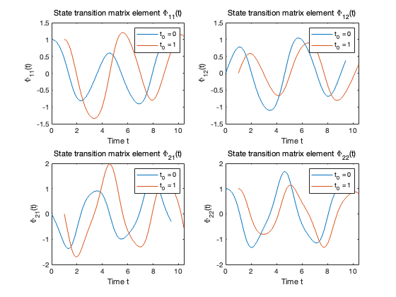

Contents
clear;
clc;
close all;
define parameters
omega = 2;
alpha = 1;
A(t)
A = @(t) [0, 1; -(omega - alpha * cos(2*t)), 0];
ODE: Phi_dot = A * Phi
odefun = @(t, X) reshape(A(t) * reshape(X, 2, 2), 4, 1);
X0 = reshape(eye(2), 4, 1);
tspan_0 = [0 3*pi];
tspan_1 = [1 1 + 3*pi];
[t_0, X_0] = ode45(odefun, tspan_0, X0);
[t_1, X_1] = ode45(odefun, tspan_1, X0);
Phi_t_t0_0 = zeros(length(t_0), 2, 2);
Phi_t_t0_1 = zeros(length(t_1), 2, 2);
for i = 1:length(t_0)
Phi_t_t0_0(i, :, :) = reshape(X_0(i, :), 2, 2);
end
for i = 1:length(t_1)
Phi_t_t0_1(i, :, :) = reshape(X_1(i, :), 2, 2);
end
print answer
disp('on the time interval of length equal to three periods of oscillations for t0 = 0');
Phi_t0_0_end = reshape(Phi_t_t0_0(end, :, :), 2, 2);
disp(Phi_t0_0_end);
disp('on the time interval of length equal to three periods of oscillations for t0 = 1');
Phi_t0_1_end = reshape(Phi_t_t0_1(end, :, :), 2, 2);
disp(Phi_t0_1_end);
on the time interval of length equal to three periods of oscillations for t0 = 0
0.942135130380487 0.378508906373619
-0.297404112355399 0.942171885496012
on the time interval of length equal to three periods of oscillations for t0 = 1
1.086870981799333 0.244552932093098
-0.546381236772937 0.797533945490601
plot just for checking
figure;
subplot(2,2,1);
plot(t_0, squeeze(Phi_t_t0_0(:,1,1)), 'DisplayName', 't_0 = 0');
hold on;
plot(t_1, squeeze(Phi_t_t0_1(:,1,1)), 'DisplayName', 't_0 = 1');
xlabel('Time t');
ylabel('\Phi_{11}(t)');
legend;
title('State transition matrix element \Phi_{11}(t)');
subplot(2,2,2);
plot(t_0, squeeze(Phi_t_t0_0(:,1,2)), 'DisplayName', 't_0 = 0');
hold on;
plot(t_1, squeeze(Phi_t_t0_1(:,1,2)), 'DisplayName', 't_0 = 1');
xlabel('Time t');
ylabel('\Phi_{12}(t)');
legend;
title('State transition matrix element \Phi_{12}(t)');
subplot(2,2,3);
plot(t_0, squeeze(Phi_t_t0_0(:,2,1)), 'DisplayName', 't_0 = 0');
hold on;
plot(t_1, squeeze(Phi_t_t0_1(:,2,1)), 'DisplayName', 't_0 = 1');
xlabel('Time t');
ylabel('\Phi_{21}(t)');
legend;
title('State transition matrix element \Phi_{21}(t)');
subplot(2,2,4);
plot(t_0, squeeze(Phi_t_t0_0(:,2,2)), 'DisplayName', 't_0 = 0');
hold on;
plot(t_1, squeeze(Phi_t_t0_1(:,2,2)), 'DisplayName', 't_0 = 1');
xlabel('Time t');
ylabel('\Phi_{22}(t)');
legend;
title('State transition matrix element \Phi_{22}(t)');
